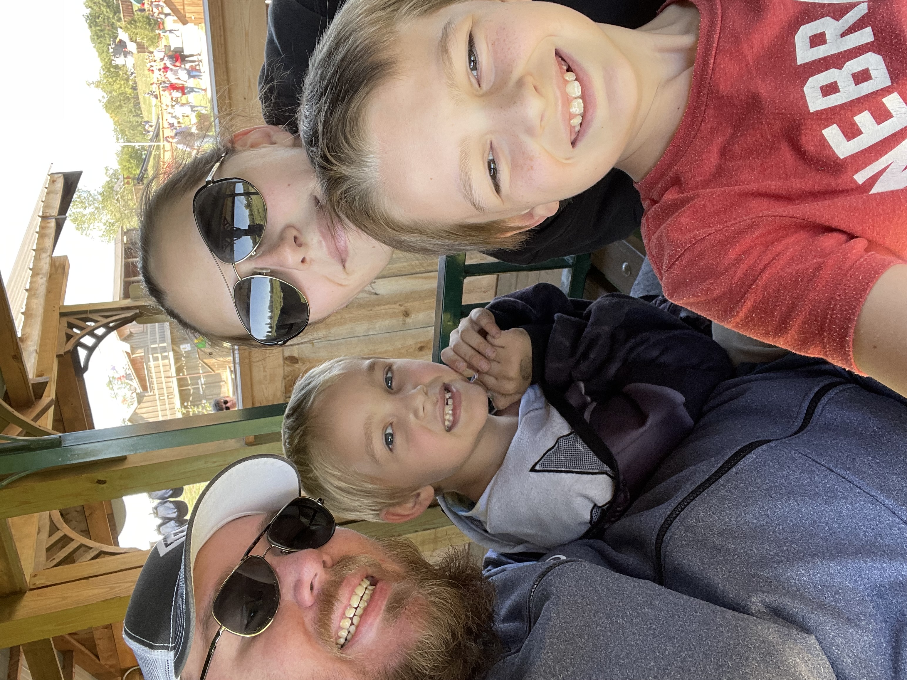

The Sasse Family
The Sasse Family
The Sasse Boys
The Sasse Pets

Meet the Sasse's!
Jake - Dad, Kansas City Chiefs fan
Ashley - Mom, Supernatural (the show) Fanatic
Brayden - Big Brother, if it's One Piece, he's in
Landon - Little Brother, obsessed with Sonic the Hedgehog